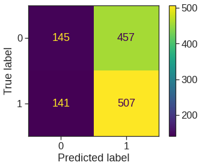

import pandas as pd
import numpy as np
import statsmodels.api as sm
import statsmodels.formula.api as smf
from sklearn.linear_model import LogisticRegression
from sklearn.discriminant_analysis import LinearDiscriminantAnalysis as LDA
from sklearn.discriminant_analysis import QuadraticDiscriminantAnalysis as QDA
from sklearn.naive_bayes import GaussianNB
from sklearn.neighbors import KNeighborsClassifier
from sklearn.preprocessing import StandardScaler, scale
from sklearn.metrics import accuracy_score, confusion_matrix, ConfusionMatrixDisplay, classification_report,\
roc_curve, auc, RocCurveDisplay
import matplotlib.pyplot as plt
import seaborn as sns
%matplotlib inline
plt.style.use('seaborn-white')
sns.set_context("notebook", font_scale=1.5, rc={"lines.linewidth": 2.5})4 Classification
|
|

|
4.1 The Stock Market Data
We will begin by examining some numerical and graphical summaries of the Smarket data, which is part of the ISLR2 library. This data set consists of percentage returns for the S&P 500 stock index over \(1,250\)~days, from the beginning of 2001 until the end of 2005. For each date, we have recorded the percentage returns for each of the five previous trading days, lagone through lagfive. We have also recorded volume (the number of shares traded on the previous day, in billions), Today (the percentage return on the date in question) and direction (whether the market was Up or Down on this date). Our goal is to predict direction (a qualitative response) using the other features.
Smarket = pd.read_csv('/content/drive/MyDrive/Lab/Data/Smarket.csv')
print(Smarket.shape)
Smarket.head()(1250, 9)| Year | Lag1 | Lag2 | Lag3 | Lag4 | Lag5 | Volume | Today | Direction | |
|---|---|---|---|---|---|---|---|---|---|
| 0 | 2001 | 0.381 | -0.192 | -2.624 | -1.055 | 5.010 | 1.1913 | 0.959 | Up |
| 1 | 2001 | 0.959 | 0.381 | -0.192 | -2.624 | -1.055 | 1.2965 | 1.032 | Up |
| 2 | 2001 | 1.032 | 0.959 | 0.381 | -0.192 | -2.624 | 1.4112 | -0.623 | Down |
| 3 | 2001 | -0.623 | 1.032 | 0.959 | 0.381 | -0.192 | 1.2760 | 0.614 | Up |
| 4 | 2001 | 0.614 | -0.623 | 1.032 | 0.959 | 0.381 | 1.2057 | 0.213 | Up |
Index(['Year', 'Lag1', 'Lag2', 'Lag3', 'Lag4', 'Lag5', 'Volume', 'Today',
'Direction'],
dtype='object')| Year | Lag1 | Lag2 | Lag3 | Lag4 | Lag5 | Volume | Today | Direction | |
|---|---|---|---|---|---|---|---|---|---|
| count | 1250.000000 | 1250.000000 | 1250.000000 | 1250.000000 | 1250.000000 | 1250.00000 | 1250.000000 | 1250.000000 | 1250 |
| unique | NaN | NaN | NaN | NaN | NaN | NaN | NaN | NaN | 2 |
| top | NaN | NaN | NaN | NaN | NaN | NaN | NaN | NaN | Up |
| freq | NaN | NaN | NaN | NaN | NaN | NaN | NaN | NaN | 648 |
| mean | 2003.016000 | 0.003834 | 0.003919 | 0.001716 | 0.001636 | 0.00561 | 1.478305 | 0.003138 | NaN |
| std | 1.409018 | 1.136299 | 1.136280 | 1.138703 | 1.138774 | 1.14755 | 0.360357 | 1.136334 | NaN |
| min | 2001.000000 | -4.922000 | -4.922000 | -4.922000 | -4.922000 | -4.92200 | 0.356070 | -4.922000 | NaN |
| 25% | 2002.000000 | -0.639500 | -0.639500 | -0.640000 | -0.640000 | -0.64000 | 1.257400 | -0.639500 | NaN |
| 50% | 2003.000000 | 0.039000 | 0.039000 | 0.038500 | 0.038500 | 0.03850 | 1.422950 | 0.038500 | NaN |
| 75% | 2004.000000 | 0.596750 | 0.596750 | 0.596750 | 0.596750 | 0.59700 | 1.641675 | 0.596750 | NaN |
| max | 2005.000000 | 5.733000 | 5.733000 | 5.733000 | 5.733000 | 5.73300 | 3.152470 | 5.733000 | NaN |
<class 'pandas.core.frame.DataFrame'>
RangeIndex: 1250 entries, 0 to 1249
Data columns (total 9 columns):
# Column Non-Null Count Dtype
--- ------ -------------- -----
0 Year 1250 non-null int64
1 Lag1 1250 non-null float64
2 Lag2 1250 non-null float64
3 Lag3 1250 non-null float64
4 Lag4 1250 non-null float64
5 Lag5 1250 non-null float64
6 Volume 1250 non-null float64
7 Today 1250 non-null float64
8 Direction 1250 non-null object
dtypes: float64(7), int64(1), object(1)
memory usage: 151.4 KBThe corr() function produces a matrix that contains all of the pairwise correlations among the predictors in a data set.
| Year | Lag1 | Lag2 | Lag3 | Lag4 | Lag5 | Volume | Today | |
|---|---|---|---|---|---|---|---|---|
| Year | 1.000000 | 0.029700 | 0.030596 | 0.033195 | 0.035689 | 0.029788 | 0.539006 | 0.030095 |
| Lag1 | 0.029700 | 1.000000 | -0.026294 | -0.010803 | -0.002986 | -0.005675 | 0.040910 | -0.026155 |
| Lag2 | 0.030596 | -0.026294 | 1.000000 | -0.025897 | -0.010854 | -0.003558 | -0.043383 | -0.010250 |
| Lag3 | 0.033195 | -0.010803 | -0.025897 | 1.000000 | -0.024051 | -0.018808 | -0.041824 | -0.002448 |
| Lag4 | 0.035689 | -0.002986 | -0.010854 | -0.024051 | 1.000000 | -0.027084 | -0.048414 | -0.006900 |
| Lag5 | 0.029788 | -0.005675 | -0.003558 | -0.018808 | -0.027084 | 1.000000 | -0.022002 | -0.034860 |
| Volume | 0.539006 | 0.040910 | -0.043383 | -0.041824 | -0.048414 | -0.022002 | 1.000000 | 0.014592 |
| Today | 0.030095 | -0.026155 | -0.010250 | -0.002448 | -0.006900 | -0.034860 | 0.014592 | 1.000000 |
# the best way to visualize corerelations matrices is heatmap
plt.figure(figsize = (8,8))
sns.heatmap(corr)<matplotlib.axes._subplots.AxesSubplot at 0x7fe61ba50910>As one would expect, the correlations between the lag variables and today’s returns are close to zero. In other words, there appears to be little correlation between today’s returns and previous days’ returns. The only substantial correlation is between Year and volume. By plotting the data, which is ordered chronologically, we see that volume is increasing over time. In other words, the average number of shares traded daily increased from 2001 to 2005.
Volume Today
Year 0.539006 0.030095
Lag1 0.040910 -0.026155
Lag2 -0.043383 -0.010250
Lag3 -0.041824 -0.002448
Lag4 -0.048414 -0.006900
Lag5 -0.022002 -0.034860
Volume 1.000000 0.014592
Today 0.014592 1.0000004.2 Logistic Regression
Next, we will fit a logistic regression model in order to predict direction using lagone through lagfive and volume. The glm() function can be used to fit many types of generalized linear models , including logistic regression. The syntax of the glm() function is similar to that of lm(), except that we must pass in the argument families.Binomial in order to tell Python to run a logistic regression rather than some other type of generalized linear model.
| Down | Up | Direction | |
|---|---|---|---|
| 0 | 0 | 1 | Up |
| 1 | 0 | 1 | Up |
| 2 | 1 | 0 | Down |
| 3 | 0 | 1 | Up |
| 4 | 0 | 1 | Up |
| ... | ... | ... | ... |
| 1245 | 0 | 1 | Up |
| 1246 | 1 | 0 | Down |
| 1247 | 0 | 1 | Up |
| 1248 | 1 | 0 | Down |
| 1249 | 1 | 0 | Down |
1250 rows × 3 columns
We choose the encoding to treat Up as 1 and Down as 0
| Year | Lag1 | Lag2 | Lag3 | Lag4 | Lag5 | Volume | Today | Direction | Direction2 | |
|---|---|---|---|---|---|---|---|---|---|---|
| 0 | 2001 | 0.381 | -0.192 | -2.624 | -1.055 | 5.010 | 1.1913 | 0.959 | Up | 1 |
| 1 | 2001 | 0.959 | 0.381 | -0.192 | -2.624 | -1.055 | 1.2965 | 1.032 | Up | 1 |
| 2 | 2001 | 1.032 | 0.959 | 0.381 | -0.192 | -2.624 | 1.4112 | -0.623 | Down | 0 |
| 3 | 2001 | -0.623 | 1.032 | 0.959 | 0.381 | -0.192 | 1.2760 | 0.614 | Up | 1 |
| 4 | 2001 | 0.614 | -0.623 | 1.032 | 0.959 | 0.381 | 1.2057 | 0.213 | Up | 1 |
formula = 'Direction2 ~ Lag1+Lag2+Lag3+Lag4+Lag5+Volume'
model = smf.glm(formula=formula, data=Smarket, family=sm.families.Binomial())
result = model.fit()
print(result.summary()) Generalized Linear Model Regression Results
==============================================================================
Dep. Variable: Direction2 No. Observations: 1250
Model: GLM Df Residuals: 1243
Model Family: Binomial Df Model: 6
Link Function: logit Scale: 1.0000
Method: IRLS Log-Likelihood: -863.79
Date: Sun, 30 Oct 2022 Deviance: 1727.6
Time: 02:24:34 Pearson chi2: 1.25e+03
No. Iterations: 4
Covariance Type: nonrobust
==============================================================================
coef std err z P>|z| [0.025 0.975]
------------------------------------------------------------------------------
Intercept -0.1260 0.241 -0.523 0.601 -0.598 0.346
Lag1 -0.0731 0.050 -1.457 0.145 -0.171 0.025
Lag2 -0.0423 0.050 -0.845 0.398 -0.140 0.056
Lag3 0.0111 0.050 0.222 0.824 -0.087 0.109
Lag4 0.0094 0.050 0.187 0.851 -0.089 0.107
Lag5 0.0103 0.050 0.208 0.835 -0.087 0.107
Volume 0.1354 0.158 0.855 0.392 -0.175 0.446
==============================================================================The smallest \(p\)-value here is associated with lagone. The negative coefficient for this predictor suggests that if the market had a positive return yesterday, then it is less likely to go up today. However, at a value of \(0.15\), the \(p\)-value is still relatively large, and so there is no clear evidence of a real association between lagone and direction.
We use the params function in order to access just the coefficients for this fitted model. https://www.statsmodels.org/dev/generated/statsmodels.genmod.generalized_linear_model.GLMResults.html.
print("Coeffieients")
print(result.params)
print("p-Values")
print(result.pvalues)
print("Dependent variables")
print(result.model.endog_names)Coeffieients
Intercept -0.126000
Lag1 -0.073074
Lag2 -0.042301
Lag3 0.011085
Lag4 0.009359
Lag5 0.010313
Volume 0.135441
dtype: float64
p-Values
Intercept 0.600700
Lag1 0.145232
Lag2 0.398352
Lag3 0.824334
Lag4 0.851445
Lag5 0.834998
Volume 0.392404
dtype: float64
Dependent variables
Direction2The predict() function can be used to predict the probability that the market will go up, given values of the predictors. If no data set is supplied to the predict() function, then the probabilities are computed for the training data that was used to fit the logistic regression model. Here we have printed only the first ten probabilities. We know that these values correspond to the probability of the market going up, rather than down, because we have set the dummy variable with a 1 for Up.
[0.50708413 0.48146788 0.48113883 0.51522236 0.51078116 0.50695646
0.49265087 0.50922916 0.51761353 0.48883778]In order to make a prediction as to whether the market will go up or down on a particular day, we must convert these predicted probabilities into class labels, Up or Down. The following command create a vector of class predictions based on whether the predicted probability of a market increase is greater than or less than \(0.5\).
Given these predictions, the confusion_matrix() function can be used to produce a confusion matrix in order to determine how many observations were correctly or incorrectly classified.
<sklearn.metrics._plot.confusion_matrix.ConfusionMatrixDisplay at 0x7fe619662690>
precision recall f1-score support
Down 0.507 0.241 0.327 602
Up 0.526 0.782 0.629 648
accuracy 0.522 1250
macro avg 0.516 0.512 0.478 1250
weighted avg 0.517 0.522 0.483 1250
The diagonal elements of the confusion matrix indicate correct predictions, while the off-diagonals represent incorrect predictions. Hence our model correctly predicted that the market would go up on \(507\) days and that it would go down on \(145\) days, for a total of \(507+145 = 652\) correct predictions. The classification_report() function can be used to compute the fraction of days for which the prediction was correct. In this case, logistic regression correctly predicted the movement of the market \(52.2\),% of the time.
At first glance, it appears that the logistic regression model is working a little better than random guessing. However, this result is misleading because we trained and tested the model on the same set of \(1,250\) observations. In other words, \(100\%-52.2\%=47.8\%\), is the training error rate. As we have seen previously, the training error rate is often overly optimistic—it tends to underestimate the test error rate. In order to better assess the accuracy of the logistic regression model in this setting, we can fit the model using part of the data, and then examine how well it predicts the held out data. This will yield a more realistic error rate, in the sense that in practice we will be interested in our model’s performance not on the data that we used to fit the model, but rather on days in the future for which the market’s movements are unknown.
To implement this strategy, we will first create a vector corresponding to the observations from 2001 through 2004. We will then use this vector to create a held out data set of observations from 2005.
train_filter = Smarket.Year < 2005
# train_filter.value_counts()
X_test = Smarket.loc[~train_filter,]
y_test = Smarket.loc[~train_filter, 'Direction2']
y_test.shape(252,)The data contains \(1{,}250\) elements, corresponding to the observations in our data set. The output above indicates that there are 252 such observations in testset.
We now fit a logistic regression model using only the subset of the observations that correspond to dates before 2005. We then obtain predicted probabilities of the stock market going up for each of the days in our test set—that is, for the days in 2005.
Notice that we have trained and tested our model on two completely separate data sets: training was performed using only the dates before 2005, and testing was performed using only the dates in 2005. Finally, we compute the predictions for 2005 and compare them to the actual movements of the market over that time period.
predictions = result.predict(X_test)
predictions_nominal = [ "Up" if x > 0.5 else "Down" for x in predictions]
print(classification_report(Smarket.loc[~train_filter, 'Direction'], predictions_nominal, digits=3)) precision recall f1-score support
Down 0.443 0.694 0.540 111
Up 0.564 0.312 0.402 141
accuracy 0.480 252
macro avg 0.503 0.503 0.471 252
weighted avg 0.511 0.480 0.463 252
The results are rather disappointing: the test error rate is \(52\),%, which is worse than random guessing! Of course this result is not all that surprising, given that one would not generally expect to be able to use previous days’ returns to predict future market performance. (After all, if it were possible to do so, then the authors of this book would be out striking it rich rather than writing a statistics textbook.)
We recall that the logistic regression model had very underwhelming \(p\)-values associated with all of the predictors, and that the smallest \(p\)-value, though not very small, corresponded to lagone. Perhaps by removing the variables that appear not to be helpful in predicting direction, we can obtain a more effective model. After all, using predictors that have no relationship with the response tends to cause a deterioration in the test error rate (since such predictors cause an increase in variance without a corresponding decrease in bias), and so removing such predictors may in turn yield an improvement.
Below we have refit the logistic regression using just lagone and lagtwo, which seemed to have the highest predictive power in the original logistic regression model.
logreg_stats = smf.glm(formula = 'Direction2 ~ Lag1+Lag2', data=Smarket, subset=train_filter,
family=sm.families.Binomial()).fit()
print(logreg_stats.summary()) Generalized Linear Model Regression Results
==============================================================================
Dep. Variable: Direction2 No. Observations: 998
Model: GLM Df Residuals: 995
Model Family: Binomial Df Model: 2
Link Function: logit Scale: 1.0000
Method: IRLS Log-Likelihood: -690.70
Date: Sun, 30 Oct 2022 Deviance: 1381.4
Time: 02:25:08 Pearson chi2: 998.
No. Iterations: 4
Covariance Type: nonrobust
==============================================================================
coef std err z P>|z| [0.025 0.975]
------------------------------------------------------------------------------
Intercept 0.0322 0.063 0.508 0.611 -0.092 0.156
Lag1 -0.0556 0.052 -1.076 0.282 -0.157 0.046
Lag2 -0.0445 0.052 -0.861 0.389 -0.146 0.057
==============================================================================X_test = Smarket.loc[~train_filter, ['Lag1', 'Lag2']]
y_test_pred = logreg_stats.predict(X_test)
y_test_pred_class = [1 if prob > 0.5 else 0 for prob in y_test_pred]
conf_mat = confusion_matrix(y_test, y_test_pred_class)
print(conf_mat)[[ 35 76]
[ 35 106]]TP = conf_mat[1,1]
TN = conf_mat[0,0]
FP = conf_mat[0,1]
FN = conf_mat[1,0]
# print("Accuracy: ", conf_mat.diagonal().sum()/conf_mat.sum() )
print("Accuracy: ", (TP+TN) / (TP+TN+FP+FN) )
print("Sensitivity: ", TP / (FN + TP) )
print("Precision: ", TP / (FP + TP) )
print("False Positive Rate: ", FP / (FP + TN) )Accuracy: 0.5595238095238095
Sensitivity: 0.75177304964539
Precision: 0.5824175824175825
False Positive Rate: 0.6846846846846847You can find many useful metrics in the sklearn module https://scikit-learn.org/stable/modules/model_evaluation.html#classification-metrics.
fpr, tpr, thresholds = roc_curve(y_test, y_test_pred_class)
print(fpr, tpr)
roc_auc = auc(fpr, tpr)
RocCurveDisplay(fpr=fpr, tpr=tpr, roc_auc=roc_auc, estimator_name='example estimator').plot()[0. 0.68468468 1. ] [0. 0.75177305 1. ]<sklearn.metrics._plot.roc_curve.RocCurveDisplay at 0x7fe618521450>Now the results appear to be a little better: \(56\%\) of the daily movements have been correctly predicted. It is worth noting that in this case, a much simpler strategy of predicting that the market will increase every day will also be correct \(56\%\) of the time! Hence, in terms of overall error rate, the logistic regression method is no better than the naive approach. However, the confusion matrix shows that on days when logistic regression predicts an increase in the market, it has a \(58\%\) accuracy rate. This suggests a possible trading strategy of buying on days when the model predicts an increasing market, and avoiding trades on days when a decrease is predicted. Of course one would need to investigate more carefully whether this small improvement was real or just due to random chance.
Suppose that we want to predict the returns associated with particular values of lagone and lagtwo. In particular, we want to predict direction on a day when lagone and lagtwo equal 1.2 and~1.1, respectively, and on a day when they equal 1.5 and $-$0.8. We do this using the predict() function.
4.3 Linear Discriminant Analysis
Now we will perform LDA on the Smarket data. In Python, we fit an LDA model using the LDA() function, which is part of the sklearn library. We fit the model using only the observations before 2005.
print('Prior Probs are - ',lda.priors_)
print('Class Means are - ',lda.means_)
print('Coeff are - ', lda.scalings_) # coefficients of ldPrior Probs are - [0.49198397 0.50801603]
Class Means are - [[ 0.04279022 0.03389409]
[-0.03954635 -0.03132544]]
Coeff are - [[-0.64201904]
[-0.51352928]]# for plotting lda
ld_sc = X_train.iloc[:, 0] * lda.scalings_[0] + X_train.iloc[:, 1] * lda.scalings_[1]
ld = pd.DataFrame({'groups': y_train, 'ld': ld_sc})
g = sns.FacetGrid(ld, col='groups')
g.map(plt.hist, 'ld')
ax1, ax2 = g.axes[0]
ax1.set_xlabel("Down")
ax2.set_xlabel("Up")Text(0.5, 15.439999999999998, 'Up')The LDA output indicates that \(\hat\pi_1=0.492\) and \(\hat\pi_2=0.508\); in other words, \(49.2\),% of the training observations correspond to days during which the market went down. It also provides the group means; these are the average of each predictor within each class, and are used by LDA as estimates of \(\mu_k\). These suggest that there is a tendency for the previous 2~days’ returns to be negative on days when the market increases, and a tendency for the previous days’ returns to be positive on days when the market declines.
The coefficients of linear discriminants output provides the linear combination of lagone and lagtwo that are used to form the LDA decision rule. In other words, these are the multipliers of the elements of \(X=x\) in (4.24). If \(-0.642\times `lagone` - 0.514 \times `lagtwo`\) is large, then the LDA classifier will predict a market increase, and if it is small, then the LDA classifier will predict a market decline.
The above plot produces plots of the linear discriminants, obtained by computing \(-0.642\times `lagone` - 0.514 \times `lagtwo`\) for each of the training observations. The Up and Down observations are displayed separately.
The predict() function returns LDA’s predictions about the movement of the market. The predict_proba returns a matrix whose \(k\)th column contains the posterior probability that the corresponding observation belongs to the \(k\)th class, computed from (4.15).
The first element, pred, contains LDA’s predictions about the movement of the market. The second element, post, is a matrix whose \(k\)th column contains the posterior probability that the corresponding observation belongs to the \(k\)th class, computed from (4.15).
As we observed in Section 4.5, the LDA and logistic regression predictions are almost identical.
Applying a \(50\),% threshold to the posterior probabilities allows us to recreate the predictions contained in pred.
Notice that the posterior probability output by the model corresponds to the probability that the market will increase:
(array([0.49017925, 0.4792185 , 0.46681848, 0.47400107, 0.49278766,
0.49385615, 0.49510156, 0.4872861 , 0.49070135, 0.48440262,
0.49069628, 0.51199885, 0.48951523, 0.47067612, 0.47445929,
0.47995834, 0.49357753, 0.50308938, 0.49788061, 0.48863309]),
array([1, 1, 1, 1, 1, 1, 1, 1, 1, 1, 1, 0, 1, 1, 1, 1, 1, 0, 1, 1],
dtype=uint8))If we wanted to use a posterior probability threshold other than \(50\),% in order to make predictions, then we could easily do so. For instance, suppose that we wish to predict a market decrease only if we are very certain that the market will indeed decrease on that day—say, if the posterior probability is at least \(90\),%.
No days in 2005 meet that threshold! In fact, the greatest posterior probability of decrease in all of 2005 was \(52.02\),%.
4.4 Quadratic Discriminant Analysis
We will now fit a QDA model to the Smarket data.
print('Mean for class 0 is - ',qda.means_[0])
print('Mean for class 1 is - ',qda.means_[1])
print('Prior probalbilities - ',qda.priors_)Mean for class 0 is - [0.04279022 0.03389409]
Mean for class 1 is - [-0.03954635 -0.03132544]
Prior probalbilities - [0.49198397 0.50801603]The output contains the group means. But it does not contain the coefficients of the linear discriminants, because the QDA classifier involves a quadratic, rather than a linear, function of the predictors. The predict() function works in exactly the same fashion as for LDA.
Accuracy using QDA is 0.5992063492063492Interestingly, the QDA predictions are accurate almost \(60\),% of the time, even though the 2005 data was not used to fit the model. This level of accuracy is quite impressive for stock market data, which is known to be quite hard to model accurately. This suggests that the quadratic form assumed by QDA may capture the true relationship more accurately than the linear forms assumed by LDA and logistic regression.
However, we recommend evaluating this method’s performance on a larger test set before betting that this approach will consistently beat the market!
4.5 Naive Bayes
Next, we fit a naive Bayes model to the Smarket data. By default, this implementation of the naive Bayes classifier models each quantitative feature using a Gaussian distribution. However, a kernel density method can also be used to estimate the distributions.
Meaning of var_smoothing.
/usr/local/lib/python3.7/dist-packages/sklearn/utils/deprecation.py:103: FutureWarning: Attribute `sigma_` was deprecated in 1.0 and will be removed in1.2. Use `var_` instead.
warnings.warn(msg, category=FutureWarning)array([[1.22619505, 1.23792871],
[1.23045262, 1.21956089]])The output contains the estimated mean and standard deviation for each variable in each class. For example, the mean for lagone is \(0.0428\) for Direction=Down, and the standard deviation is \(1.226\). We can easily verify this:
0.04279022403258655
1.226195046492573Notice that R calulates the standard deviation with N - 1 as the denominator, and in Python as Numpy use N. https://stackoverflow.com/questions/20708455/different-results-for-standard-deviation-using-numpy-and-r.
The predict() function is straightforward.
Accuracy using gnb is 0.5952380952380952Naive Bayes performs very well on this data, with accurate predictions over \(59.5\%\) of the time. This is slightly worse than QDA, but much better than LDA.
The predict_prob() function can generate estimates of the probability that each observation belongs to a particular class.
4.6 \(K\)-Nearest Neighbors
We will now perform KNN using the knn() function.
[[43 68]
[58 83]]
precision recall f1-score support
0 0.426 0.387 0.406 111
1 0.550 0.589 0.568 141
accuracy 0.500 252
macro avg 0.488 0.488 0.487 252
weighted avg 0.495 0.500 0.497 252
The results using \(K=1\) are not very good, since only \(50\),% of the observations are correctly predicted. Of course, it may be that \(K=1\) results in an overly flexible fit to the data. Below, we repeat the analysis using \(K=3\).
knn = KNeighborsClassifier(n_neighbors=3)
pred = knn.fit(X_train, y_train).predict(X_test)
print(confusion_matrix(y_test, pred))
print(classification_report(y_test, pred, digits=3))[[48 63]
[55 86]]
precision recall f1-score support
0 0.466 0.432 0.449 111
1 0.577 0.610 0.593 141
accuracy 0.532 252
macro avg 0.522 0.521 0.521 252
weighted avg 0.528 0.532 0.529 252
The results have improved slightly. But increasing \(K\) further turns out to provide no further improvements. It appears that for this data, QDA provides the best results of the methods that we have examined so far.
KNN does not perform well on the Smarket data but it does often provide impressive results. As an example we will apply the KNN approach to the Insurance data set, which is part of the ISLR2 library. This data set includes \(85\) predictors that measure demographic characteristics for 5,822 individuals. The response variable is Purchase, which indicates whether or not a given individual purchases a caravan insurance policy. In this data set, only \(6\),% of people purchased caravan insurance.
Caravan = pd.read_csv('/content/drive/MyDrive/Lab/Data/Caravan.csv')
print(Caravan.shape)
print(Caravan.Purchase.value_counts())
print(Caravan.Purchase.value_counts()[1] / len(Caravan))
# Only around 6% of the people purchased the insurance
Caravan.tail()(5822, 86)
No 5474
Yes 348
Name: Purchase, dtype: int64
0.05977327378907592| MOSTYPE | MAANTHUI | MGEMOMV | MGEMLEEF | MOSHOOFD | MGODRK | MGODPR | MGODOV | MGODGE | MRELGE | ... | APERSONG | AGEZONG | AWAOREG | ABRAND | AZEILPL | APLEZIER | AFIETS | AINBOED | ABYSTAND | Purchase | |
|---|---|---|---|---|---|---|---|---|---|---|---|---|---|---|---|---|---|---|---|---|---|
| 5817 | 36 | 1 | 1 | 2 | 8 | 0 | 6 | 1 | 2 | 1 | ... | 0 | 0 | 0 | 1 | 0 | 0 | 0 | 0 | 0 | No |
| 5818 | 35 | 1 | 4 | 4 | 8 | 1 | 4 | 1 | 4 | 6 | ... | 0 | 0 | 0 | 1 | 0 | 0 | 0 | 0 | 0 | No |
| 5819 | 33 | 1 | 3 | 4 | 8 | 0 | 6 | 0 | 3 | 5 | ... | 0 | 0 | 0 | 1 | 0 | 0 | 0 | 0 | 0 | Yes |
| 5820 | 34 | 1 | 3 | 2 | 8 | 0 | 7 | 0 | 2 | 7 | ... | 0 | 0 | 0 | 0 | 0 | 0 | 0 | 0 | 0 | No |
| 5821 | 33 | 1 | 3 | 3 | 8 | 0 | 6 | 1 | 2 | 7 | ... | 0 | 0 | 0 | 0 | 0 | 0 | 0 | 0 | 0 | No |
5 rows × 86 columns
Because the KNN classifier predicts the class of a given test observation by identifying the observations that are nearest to it, the scale of the variables matters. Variables that are on a large scale will have a much larger effect on the distance between the observations, and hence on the KNN classifier, than variables that are on a small scale. For instance, imagine a data set that contains two variables, salary and age (measured in dollars and years, respectively). As far as KNN is concerned, a difference of \(1,000\) in salary is enormous compared to a difference of \(50\) years in age. Consequently, salary will drive the KNN classification results, and age will have almost no effect. This is contrary to our intuition that a salary difference of \(1,000\) is quite small compared to an age difference of \(50\) years.
Furthermore, the importance of scale to the KNN classifier leads to another issue: if we measured salary in Japanese yen, or if we measured age in minutes, then we’d get quite different classification results from what we get if these two variables are measured in dollars and years.
A good way to handle this problem is to the data so that all variables are given a mean of zero and a standard deviation of one. Then all variables will be on a comparable scale. The scale() function does just this. In standardizing the data, we exclude column Purchase variable.
# From a sample of means if the observations it can be seen that the variables falls in different ranges
# We want all the variables to have a same range.
Caravan.mean()[:5]/usr/local/lib/python3.7/dist-packages/ipykernel_launcher.py:3: FutureWarning: Dropping of nuisance columns in DataFrame reductions (with 'numeric_only=None') is deprecated; in a future version this will raise TypeError. Select only valid columns before calling the reduction.
This is separate from the ipykernel package so we can avoid doing imports untilMOSTYPE 24.253349
MAANTHUI 1.110615
MGEMOMV 2.678805
MGEMLEEF 2.991240
MOSHOOFD 5.773617
dtype: float64y = Caravan.Purchase
X = Caravan.drop('Purchase', axis=1).astype('float64')
X_scaled = scale(X)
X_scaled.std(axis=0)array([1., 1., 1., 1., 1., 1., 1., 1., 1., 1., 1., 1., 1., 1., 1., 1., 1.,
1., 1., 1., 1., 1., 1., 1., 1., 1., 1., 1., 1., 1., 1., 1., 1., 1.,
1., 1., 1., 1., 1., 1., 1., 1., 1., 1., 1., 1., 1., 1., 1., 1., 1.,
1., 1., 1., 1., 1., 1., 1., 1., 1., 1., 1., 1., 1., 1., 1., 1., 1.,
1., 1., 1., 1., 1., 1., 1., 1., 1., 1., 1., 1., 1., 1., 1., 1., 1.])Now every column has a standard deviation of one and a mean of zero.
We now split the observations into a test set, containing the first 1,000 observations, and a training set, containing the remaining observations. We fit a KNN model on the training data using \(K=1\), and evaluate its performance on the test data.
knn = KNeighborsClassifier(n_neighbors=1) # K=1
knn.fit(X_train, y_train)
y_pred = knn.predict(X_test) # returns class label
print("Test set error rate: ", (y_test != y_pred).mean() ) # manual calculatinTest set error rate: 0.118The KNN error rate on the 1,000 test observations is just under 12%. At first glance, this may appear to be fairly good. However, since only 6% of customers purchased insurance, we could get the error rate down to 6% by always predicting \({\tt No}\) regardless of the values of the predictors!
Suppose that there is some non-trivial cost to trying to sell insurance to a given individual. For instance, perhaps a salesperson must visit each potential customer. If the company tries to sell insurance to a random selection of customers, then the success rate will be only 6%, which may be far too low given the costs involved.
Instead, the company would like to try to sell insurance only to customers who are likely to buy it. So the overall error rate is not of interest. Instead, the fraction of individuals that are correctly predicted to buy insurance is of interest.
It turns out that KNN with \(K = 1\) does far better than random guessing among the customers that are predicted to buy insurance.
[[873 68]
[ 50 9]]0.11688311688311688Among \(77\) such customers, \(9\), or \(11.7\),%, actually do purchase insurance. This is double the rate that one would obtain from random guessing.
Using \(K=3\), the success rate increases to \(20\),%, and with \(K=5\) the rate is \(26.7\),%. This is over four times the rate that results from random guessing. It appears that KNN is finding some real patterns in a difficult data set!
knn = KNeighborsClassifier(n_neighbors=3) # K=1
knn.fit(X_train, y_train)
y_pred = knn.predict(X_test) # returns class label
cm = confusion_matrix(y_test, y_pred)
print(cm)
print(cm[1,1]/(cm[0,1]+cm[1,1]))
knn = KNeighborsClassifier(n_neighbors=5) # K=1
knn.fit(X_train, y_train)
y_pred = knn.predict(X_test) # returns class label
cm = confusion_matrix(y_test, y_pred)
print(cm)
cm[1,1]/(cm[0,1]+cm[1,1])[[921 20]
[ 54 5]]
0.2
[[930 11]
[ 55 4]]0.26666666666666666However, while this strategy is cost-effective, it is worth noting that only 15 customers are predicted to purchase insurance using KNN with \(K=5\). In practice, the insurance company may wish to expend resources on convincing more than just 15 potential customers to buy insurance.
As a comparison, we can also fit a logistic regression model to the data. If we use \(0.5\) as the predicted probability cut-off for the classifier, then we have a problem: only seven of the test observations are predicted to purchase insurance. Even worse, we are wrong about all of these! However, we are not required to use a cut-off of \(0.5\). If we instead predict a purchase any time the predicted probability of purchase exceeds \(0.25\), we get much better results: we predict that 33 people will purchase insurance, and we are correct for about \(33\),% of these people. This is over five times better than random guessing!
log_reg = LogisticRegression(solver='newton-cg', C=1e9)
log_reg.fit(X_train, y_train)
y_pred = log_reg.predict(X_test) # returns class labels based on threshold=0.5
cm = confusion_matrix(y_test, y_pred)
print(cm)
TP = cm[1,1]
TN = cm[0,0]
FP = cm[0,1]
FN = cm[1,0]
print("Accuracy: ", (TP+TN) / (TP+TN+FP+FN) )
print("Sensitivity(Recall): ", TP / (FN + TP) )
print("Precision: ", TP / (FP + TP) )
print("False Positive Rate: ", FP / (FP + TN) )[[934 7]
[ 59 0]]
Accuracy: 0.934
Sensitivity(Recall): 0.0
Precision: 0.0
False Positive Rate: 0.007438894792773645cm = confusion_matrix(y_test, y_pred_sensitized)
print(cm)
TP = cm[1,1]
TN = cm[0,0]
FP = cm[0,1]
FN = cm[1,0]
print("Accuracy: ", (TP+TN) / (TP+TN+FP+FN) )
print("Sensitivity(Recall): ", TP / (FN + TP) )
print("Precision: ", TP / (FP + TP) )
print("False Positive Rate: ", FP / (FP + TN) )[[919 22]
[ 48 11]]
Accuracy: 0.93
Sensitivity(Recall): 0.1864406779661017
Precision: 0.3333333333333333
False Positive Rate: 0.0233793836344314554.7 Poisson Regression
Finally, we fit a Poisson regression model to the Bikeshare data set, which measures the number of bike rentals (bikers) per hour in Washington, DC. The data can be found in the ISLR2 library.
Bikeshare = pd.read_csv('/content/drive/MyDrive/Lab/Data/Bikeshare.csv', index_col=0)
Bikeshare.index = Bikeshare.index - 1
print(Bikeshare.shape)
print(Bikeshare.columns)
# Only around 6% of the people purchased the insurance
Bikeshare.tail()(8645, 15)
Index(['season', 'mnth', 'day', 'hr', 'holiday', 'weekday', 'workingday',
'weathersit', 'temp', 'atemp', 'hum', 'windspeed', 'casual',
'registered', 'bikers'],
dtype='object')| season | mnth | day | hr | holiday | weekday | workingday | weathersit | temp | atemp | hum | windspeed | casual | registered | bikers | |
|---|---|---|---|---|---|---|---|---|---|---|---|---|---|---|---|
| 8640 | 1 | Dec | 365 | 19 | 0 | 6 | 0 | clear | 0.42 | 0.4242 | 0.54 | 0.2239 | 19 | 73 | 92 |
| 8641 | 1 | Dec | 365 | 20 | 0 | 6 | 0 | clear | 0.42 | 0.4242 | 0.54 | 0.2239 | 8 | 63 | 71 |
| 8642 | 1 | Dec | 365 | 21 | 0 | 6 | 0 | clear | 0.40 | 0.4091 | 0.58 | 0.1940 | 2 | 50 | 52 |
| 8643 | 1 | Dec | 365 | 22 | 0 | 6 | 0 | clear | 0.38 | 0.3939 | 0.62 | 0.1343 | 2 | 36 | 38 |
| 8644 | 1 | Dec | 365 | 23 | 0 | 6 | 0 | clear | 0.36 | 0.3788 | 0.66 | 0.0000 | 4 | 27 | 31 |
We begin by fitting a least squares linear regression model to the data.
<class 'pandas.core.frame.DataFrame'>
Int64Index: 8645 entries, 0 to 8644
Data columns (total 15 columns):
# Column Non-Null Count Dtype
--- ------ -------------- -----
0 season 8645 non-null int64
1 mnth 8645 non-null object
2 day 8645 non-null int64
3 hr 8645 non-null int64
4 holiday 8645 non-null int64
5 weekday 8645 non-null int64
6 workingday 8645 non-null int64
7 weathersit 8645 non-null object
8 temp 8645 non-null float64
9 atemp 8645 non-null float64
10 hum 8645 non-null float64
11 windspeed 8645 non-null float64
12 casual 8645 non-null int64
13 registered 8645 non-null int64
14 bikers 8645 non-null int64
dtypes: float64(4), int64(9), object(2)
memory usage: 1.1+ MBBikeshare['hr'] = Bikeshare['hr'].astype('category')
Bikeshare['mnth'] = Bikeshare['mnth'].astype('category')
Bikeshare.info()<class 'pandas.core.frame.DataFrame'>
Int64Index: 8645 entries, 0 to 8644
Data columns (total 15 columns):
# Column Non-Null Count Dtype
--- ------ -------------- -----
0 season 8645 non-null int64
1 mnth 8645 non-null category
2 day 8645 non-null int64
3 hr 8645 non-null category
4 holiday 8645 non-null int64
5 weekday 8645 non-null int64
6 workingday 8645 non-null int64
7 weathersit 8645 non-null object
8 temp 8645 non-null float64
9 atemp 8645 non-null float64
10 hum 8645 non-null float64
11 windspeed 8645 non-null float64
12 casual 8645 non-null int64
13 registered 8645 non-null int64
14 bikers 8645 non-null int64
dtypes: category(2), float64(4), int64(8), object(1)
memory usage: 963.5+ KB0 Jan
1 Jan
2 Jan
3 Jan
4 Jan
...
8640 Dec
8641 Dec
8642 Dec
8643 Dec
8644 Dec
Name: mnth, Length: 8645, dtype: category
Categories (12, object): ['April', 'Aug', 'Dec', 'Feb', ..., 'May', 'Nov', 'Oct', 'Sept']['Jan', 'Feb', 'March', 'April', 'May', ..., 'Aug', 'Sept', 'Oct', 'Nov', 'Dec']
Length: 12
Categories (12, object): ['April', 'Aug', 'Dec', 'Feb', ..., 'May', 'Nov', 'Oct', 'Sept']/usr/local/lib/python3.7/dist-packages/ipykernel_launcher.py:1: FutureWarning: The `inplace` parameter in pandas.Categorical.reorder_categories is deprecated and will be removed in a future version. Reordering categories will always return a new Categorical object.
"""Entry point for launching an IPython kernel.0 Jan
1 Jan
2 Jan
3 Jan
4 Jan
...
8640 Dec
8641 Dec
8642 Dec
8643 Dec
8644 Dec
Name: mnth, Length: 8645, dtype: category
Categories (12, object): ['April', 'Aug', 'Dec', 'Feb', ..., 'May', 'Nov', 'Oct', 'Sept']Here, we use Jan and 0 as baseline
# Note double quote is needed fot the reference string!
est = smf.ols('bikers ~ C(mnth, Treatment("Jan")) + C(hr, Treatment(0)) + workingday + temp + weathersit',data = Bikeshare).fit()
print(est.summary()) OLS Regression Results
==============================================================================
Dep. Variable: bikers R-squared: 0.675
Model: OLS Adj. R-squared: 0.673
Method: Least Squares F-statistic: 457.3
Date: Sun, 25 Sep 2022 Prob (F-statistic): 0.00
Time: 08:38:33 Log-Likelihood: -49743.
No. Observations: 8645 AIC: 9.957e+04
Df Residuals: 8605 BIC: 9.985e+04
Df Model: 39
Covariance Type: nonrobust
======================================================================================================
coef std err t P>|t| [0.025 0.975]
------------------------------------------------------------------------------------------------------
Intercept -68.6317 5.307 -12.932 0.000 -79.035 -58.229
C(mnth, Treatment("Jan"))[T.April] 41.4249 4.972 8.331 0.000 31.678 51.172
C(mnth, Treatment("Jan"))[T.Aug] 53.2430 6.640 8.019 0.000 40.227 66.259
C(mnth, Treatment("Jan"))[T.Dec] 46.4577 4.271 10.878 0.000 38.086 54.829
C(mnth, Treatment("Jan"))[T.Feb] 6.8452 4.287 1.597 0.110 -1.559 15.250
C(mnth, Treatment("Jan"))[T.July] 45.3245 7.081 6.401 0.000 31.444 59.205
C(mnth, Treatment("Jan"))[T.June] 67.8187 6.544 10.364 0.000 54.992 80.646
C(mnth, Treatment("Jan"))[T.March] 16.5514 4.301 3.848 0.000 8.120 24.983
C(mnth, Treatment("Jan"))[T.May] 72.5571 5.641 12.862 0.000 61.499 83.615
C(mnth, Treatment("Jan"))[T.Nov] 60.3100 4.610 13.083 0.000 51.273 69.347
C(mnth, Treatment("Jan"))[T.Oct] 75.8343 4.950 15.319 0.000 66.130 85.538
C(mnth, Treatment("Jan"))[T.Sept] 66.6783 5.925 11.254 0.000 55.064 78.293
C(hr, Treatment(0))[T.1] -14.5793 5.699 -2.558 0.011 -25.750 -3.408
C(hr, Treatment(0))[T.2] -21.5791 5.733 -3.764 0.000 -32.817 -10.341
C(hr, Treatment(0))[T.3] -31.1408 5.778 -5.389 0.000 -42.468 -19.814
C(hr, Treatment(0))[T.4] -36.9075 5.802 -6.361 0.000 -48.281 -25.534
C(hr, Treatment(0))[T.5] -24.1355 5.737 -4.207 0.000 -35.381 -12.890
C(hr, Treatment(0))[T.6] 20.5997 5.704 3.612 0.000 9.419 31.781
C(hr, Treatment(0))[T.7] 120.0931 5.693 21.095 0.000 108.934 131.253
C(hr, Treatment(0))[T.8] 223.6619 5.690 39.310 0.000 212.509 234.815
C(hr, Treatment(0))[T.9] 120.5819 5.693 21.182 0.000 109.423 131.741
C(hr, Treatment(0))[T.10] 83.8013 5.705 14.689 0.000 72.618 94.985
C(hr, Treatment(0))[T.11] 105.4234 5.722 18.424 0.000 94.207 116.640
C(hr, Treatment(0))[T.12] 137.2837 5.740 23.916 0.000 126.032 148.536
C(hr, Treatment(0))[T.13] 136.0359 5.760 23.617 0.000 124.745 147.327
C(hr, Treatment(0))[T.14] 126.6361 5.776 21.923 0.000 115.313 137.959
C(hr, Treatment(0))[T.15] 132.0865 5.780 22.852 0.000 120.756 143.417
C(hr, Treatment(0))[T.16] 178.5206 5.772 30.927 0.000 167.206 189.836
C(hr, Treatment(0))[T.17] 296.2670 5.749 51.537 0.000 284.998 307.536
C(hr, Treatment(0))[T.18] 269.4409 5.736 46.976 0.000 258.198 280.684
C(hr, Treatment(0))[T.19] 186.2558 5.714 32.596 0.000 175.055 197.457
C(hr, Treatment(0))[T.20] 125.5492 5.704 22.012 0.000 114.369 136.730
C(hr, Treatment(0))[T.21] 87.5537 5.693 15.378 0.000 76.393 98.714
C(hr, Treatment(0))[T.22] 59.1226 5.689 10.392 0.000 47.970 70.275
C(hr, Treatment(0))[T.23] 26.8376 5.688 4.719 0.000 15.688 37.987
weathersit[T.cloudy/misty] -12.8903 1.964 -6.562 0.000 -16.741 -9.040
weathersit[T.heavy rain/snow] -109.7446 76.667 -1.431 0.152 -260.031 40.542
weathersit[T.light rain/snow] -66.4944 2.965 -22.425 0.000 -72.307 -60.682
workingday 1.2696 1.784 0.711 0.477 -2.228 4.768
temp 157.2094 10.261 15.321 0.000 137.095 177.324
==============================================================================
Omnibus: 288.526 Durbin-Watson: 0.519
Prob(Omnibus): 0.000 Jarque-Bera (JB): 518.512
Skew: 0.273 Prob(JB): 2.55e-113
Kurtosis: 4.068 Cond. No. 131.
==============================================================================
Notes:
[1] Standard Errors assume that the covariance matrix of the errors is correctly specified.In ols, the first level of hr (0) and mnth (Jan) are treated as the baseline values by specifying the reference and explicity cated to categorical variable. Therefore, no coefficient estimates are provided for them: implicitly, their coefficient estimates are zero, and all other levels are measured relative to these baselines. For example, the Feb coefficient of \(6.845\) signifies that, holding all other variables constant, there are on average about 7 more riders in February than in January. Similarly there are about 16.5 more riders in March than in January.
https://github.com/statsmodels/statsmodels/blob/main/examples/python/contrasts.py.
The results seen in Section 4.6.1 used a slightly different coding of the variables hr and mnth, as follows:
est2 = smf.ols('bikers ~ C(mnth, contrast2) + C(hr, contrast1) + workingday + temp + weathersit',data = Bikeshare).fit()
print(est2.summary()) OLS Regression Results
==============================================================================
Dep. Variable: bikers R-squared: 0.675
Model: OLS Adj. R-squared: 0.673
Method: Least Squares F-statistic: 457.3
Date: Sun, 25 Sep 2022 Prob (F-statistic): 0.00
Time: 08:38:34 Log-Likelihood: -49743.
No. Observations: 8645 AIC: 9.957e+04
Df Residuals: 8605 BIC: 9.985e+04
Df Model: 39
Covariance Type: nonrobust
=================================================================================================
coef std err t P>|t| [0.025 0.975]
-------------------------------------------------------------------------------------------------
Intercept 73.5974 5.132 14.340 0.000 63.537 83.658
C(mnth, contrast2)[S.0] -4.6622 2.741 -1.701 0.089 -10.034 0.710
C(mnth, contrast2)[S.1] 7.1560 3.535 2.024 0.043 0.227 14.085
C(mnth, contrast2)[S.2] 0.3706 3.156 0.117 0.907 -5.816 6.558
C(mnth, contrast2)[S.3] -39.2419 3.539 -11.088 0.000 -46.179 -32.304
C(mnth, contrast2)[S.4] -46.0871 4.085 -11.281 0.000 -54.096 -38.079
C(mnth, contrast2)[S.5] -0.7626 3.908 -0.195 0.845 -8.424 6.899
C(mnth, contrast2)[S.6] 21.7317 3.465 6.272 0.000 14.939 28.524
C(mnth, contrast2)[S.7] -29.5357 3.155 -9.361 0.000 -35.721 -23.351
C(mnth, contrast2)[S.8] 26.4700 2.851 9.285 0.000 20.882 32.058
C(mnth, contrast2)[S.9] 14.2229 2.860 4.972 0.000 8.616 19.830
C(mnth, contrast2)[S.10] 29.7472 2.700 11.019 0.000 24.455 35.039
C(hr, contrast1)[S.0] -96.1420 3.955 -24.307 0.000 -103.895 -88.389
C(hr, contrast1)[S.1] -110.7213 3.966 -27.916 0.000 -118.496 -102.947
C(hr, contrast1)[S.2] -117.7212 4.016 -29.310 0.000 -125.594 -109.848
C(hr, contrast1)[S.3] -127.2828 4.081 -31.191 0.000 -135.282 -119.283
C(hr, contrast1)[S.4] -133.0495 4.117 -32.319 0.000 -141.119 -124.980
C(hr, contrast1)[S.5] -120.2775 4.037 -29.794 0.000 -128.191 -112.364
C(hr, contrast1)[S.6] -75.5424 3.992 -18.925 0.000 -83.367 -67.718
C(hr, contrast1)[S.7] 23.9511 3.969 6.035 0.000 16.172 31.730
C(hr, contrast1)[S.8] 127.5199 3.950 32.284 0.000 119.777 135.263
C(hr, contrast1)[S.9] 24.4399 3.936 6.209 0.000 16.724 32.155
C(hr, contrast1)[S.10] -12.3407 3.936 -3.135 0.002 -20.056 -4.625
C(hr, contrast1)[S.11] 9.2814 3.945 2.353 0.019 1.549 17.014
C(hr, contrast1)[S.12] 41.1417 3.957 10.397 0.000 33.385 48.899
C(hr, contrast1)[S.13] 39.8939 3.975 10.036 0.000 32.102 47.686
C(hr, contrast1)[S.14] 30.4940 3.991 7.641 0.000 22.671 38.317
C(hr, contrast1)[S.15] 35.9445 3.995 8.998 0.000 28.114 43.775
C(hr, contrast1)[S.16] 82.3786 3.988 20.655 0.000 74.561 90.197
C(hr, contrast1)[S.17] 200.1249 3.964 50.488 0.000 192.355 207.895
C(hr, contrast1)[S.18] 173.2989 3.956 43.806 0.000 165.544 181.054
C(hr, contrast1)[S.19] 90.1138 3.940 22.872 0.000 82.390 97.837
C(hr, contrast1)[S.20] 29.4071 3.936 7.471 0.000 21.691 37.123
C(hr, contrast1)[S.21] -8.5883 3.933 -2.184 0.029 -16.298 -0.878
C(hr, contrast1)[S.22] -37.0194 3.934 -9.409 0.000 -44.732 -29.307
weathersit[T.cloudy/misty] -12.8903 1.964 -6.562 0.000 -16.741 -9.040
weathersit[T.heavy rain/snow] -109.7446 76.667 -1.431 0.152 -260.031 40.542
weathersit[T.light rain/snow] -66.4944 2.965 -22.425 0.000 -72.307 -60.682
workingday 1.2696 1.784 0.711 0.477 -2.228 4.768
temp 157.2094 10.261 15.321 0.000 137.095 177.324
==============================================================================
Omnibus: 288.526 Durbin-Watson: 0.519
Prob(Omnibus): 0.000 Jarque-Bera (JB): 518.512
Skew: 0.273 Prob(JB): 2.55e-113
Kurtosis: 4.068 Cond. No. 127.
==============================================================================
Notes:
[1] Standard Errors assume that the covariance matrix of the errors is correctly specified.What is the difference between the two codings? In est2, a coefficient estimate is reported for all but the last level of hr and mnth. Importantly, in est2, the coefficient estimate for the last level of mnth is not zero: instead, it equals the negative of the sum of the coefficient estimates for all of the other levels. Similarly, in est2, the coefficient estimate for the last level of hr is the negative of the sum of the coefficient estimates for all of the other levels. This means that the coefficients of hr and mnth in est2 will always sum to zero, and can be interpreted as the difference from the mean level. For example, the coefficient for January of \(-46.087\) indicates that, holding all other variables constant, there are typically 46 fewer riders in January relative to the yearly average.
It is important to realize that the choice of coding really does not matter, provided that we interpret the model output correctly in light of the coding used. For example, we see that the predictions from the linear model are the same regardless of coding:
The sum of squared differences is zero. We can also see this using the np.allclose() function:
To reproduce the left-hand side of Figure 4.13, we must first obtain the coefficient estimates associated with mnth. The coefficients for January through November can be obtained directly from the est2 object. The coefficient for December must be explicitly computed as the negative sum of all the other months.
ax = sns.lineplot(x=range(1,13), y=y1, marker="o")
ax.set_xlabel("Month")
ax.set_ylabel("Coefficien")
ax.set_xticks(range(1,13))
ax.set_xticklabels(["J", "F", "M", "A", "M", "J", "J", "A", "S", "O", "N", "D"])[Text(0, 0, 'J'),
Text(0, 0, 'F'),
Text(0, 0, 'M'),
Text(0, 0, 'A'),
Text(0, 0, 'M'),
Text(0, 0, 'J'),
Text(0, 0, 'J'),
Text(0, 0, 'A'),
Text(0, 0, 'S'),
Text(0, 0, 'O'),
Text(0, 0, 'N'),
Text(0, 0, 'D')]Reproducing the right-hand side of Figure 4.13 follows a similar process.
ax = sns.lineplot(x=range(1,25), y=y2, marker="o")
ax.set_xlabel("Hour")
ax.set_ylabel("Coefficien")Text(0, 0.5, 'Coefficien')Now, we consider instead fitting a Poisson regression model to the Bikeshare data. Very little changes, except that we now use the function glm() with the argument families.Poisson to specify that we wish to fit a Poisson regression model:
formula = 'bikers ~ C(mnth, contrast2) + C(hr, contrast1) + workingday + temp + weathersit'
model = smf.glm(formula=formula, data=Bikeshare, family=sm.families.Poisson())
result = model.fit()
print(result.summary()) Generalized Linear Model Regression Results
==============================================================================
Dep. Variable: bikers No. Observations: 8645
Model: GLM Df Residuals: 8605
Model Family: Poisson Df Model: 39
Link Function: log Scale: 1.0000
Method: IRLS Log-Likelihood: -1.4054e+05
Date: Sun, 25 Sep 2022 Deviance: 2.2804e+05
Time: 08:38:40 Pearson chi2: 2.20e+05
No. Iterations: 7
Covariance Type: nonrobust
=================================================================================================
coef std err z P>|z| [0.025 0.975]
-------------------------------------------------------------------------------------------------
Intercept 4.1182 0.006 683.963 0.000 4.106 4.130
C(mnth, contrast2)[S.0] 0.0215 0.003 6.888 0.000 0.015 0.028
C(mnth, contrast2)[S.1] 0.1512 0.004 41.281 0.000 0.144 0.158
C(mnth, contrast2)[S.2] 0.0167 0.004 4.390 0.000 0.009 0.024
C(mnth, contrast2)[S.3] -0.4441 0.005 -91.379 0.000 -0.454 -0.435
C(mnth, contrast2)[S.4] -0.6702 0.006 -113.445 0.000 -0.682 -0.659
C(mnth, contrast2)[S.5] 0.1036 0.004 25.121 0.000 0.096 0.112
C(mnth, contrast2)[S.6] 0.2232 0.004 62.818 0.000 0.216 0.230
C(mnth, contrast2)[S.7] -0.2937 0.004 -70.886 0.000 -0.302 -0.286
C(mnth, contrast2)[S.8] 0.2405 0.003 82.462 0.000 0.235 0.246
C(mnth, contrast2)[S.9] 0.1503 0.003 47.248 0.000 0.144 0.156
C(mnth, contrast2)[S.10] 0.2676 0.003 96.091 0.000 0.262 0.273
C(hr, contrast1)[S.0] -0.7544 0.008 -95.744 0.000 -0.770 -0.739
C(hr, contrast1)[S.1] -1.2260 0.010 -123.173 0.000 -1.245 -1.206
C(hr, contrast1)[S.2] -1.5631 0.012 -131.702 0.000 -1.586 -1.540
C(hr, contrast1)[S.3] -2.1983 0.016 -133.846 0.000 -2.230 -2.166
C(hr, contrast1)[S.4] -2.8305 0.023 -125.586 0.000 -2.875 -2.786
C(hr, contrast1)[S.5] -1.8147 0.013 -134.775 0.000 -1.841 -1.788
C(hr, contrast1)[S.6] -0.4299 0.007 -62.341 0.000 -0.443 -0.416
C(hr, contrast1)[S.7] 0.5752 0.004 130.544 0.000 0.567 0.584
C(hr, contrast1)[S.8] 1.0769 0.004 302.220 0.000 1.070 1.084
C(hr, contrast1)[S.9] 0.5818 0.004 135.727 0.000 0.573 0.590
C(hr, contrast1)[S.10] 0.3369 0.005 71.372 0.000 0.328 0.346
C(hr, contrast1)[S.11] 0.4941 0.004 112.494 0.000 0.486 0.503
C(hr, contrast1)[S.12] 0.6796 0.004 167.040 0.000 0.672 0.688
C(hr, contrast1)[S.13] 0.6736 0.004 164.722 0.000 0.666 0.682
C(hr, contrast1)[S.14] 0.6249 0.004 149.570 0.000 0.617 0.633
C(hr, contrast1)[S.15] 0.6538 0.004 158.205 0.000 0.646 0.662
C(hr, contrast1)[S.16] 0.8743 0.004 231.040 0.000 0.867 0.882
C(hr, contrast1)[S.17] 1.2946 0.003 397.848 0.000 1.288 1.301
C(hr, contrast1)[S.18] 1.2123 0.003 365.084 0.000 1.206 1.219
C(hr, contrast1)[S.19] 0.9140 0.004 247.065 0.000 0.907 0.921
C(hr, contrast1)[S.20] 0.6162 0.004 147.045 0.000 0.608 0.624
C(hr, contrast1)[S.21] 0.3642 0.005 78.173 0.000 0.355 0.373
C(hr, contrast1)[S.22] 0.1175 0.005 22.488 0.000 0.107 0.128
weathersit[T.cloudy/misty] -0.0752 0.002 -34.528 0.000 -0.080 -0.071
weathersit[T.heavy rain/snow] -0.9263 0.167 -5.554 0.000 -1.253 -0.599
weathersit[T.light rain/snow] -0.5758 0.004 -141.905 0.000 -0.584 -0.568
workingday 0.0147 0.002 7.502 0.000 0.011 0.018
temp 0.7853 0.011 68.434 0.000 0.763 0.808
=================================================================================================We can plot the coefficients associated with mnth and hr, in order to reproduce Figure 4.15:
ax = sns.lineplot(x=range(1,13), y=y3, marker="o")
ax.set_xlabel("Month")
ax.set_ylabel("Coefficien")
ax.set_xticks(range(1,13))
ax.set_xticklabels(["J", "F", "M", "A", "M", "J", "J", "A", "S", "O", "N", "D"])[Text(0, 0, 'J'),
Text(0, 0, 'F'),
Text(0, 0, 'M'),
Text(0, 0, 'A'),
Text(0, 0, 'M'),
Text(0, 0, 'J'),
Text(0, 0, 'J'),
Text(0, 0, 'A'),
Text(0, 0, 'S'),
Text(0, 0, 'O'),
Text(0, 0, 'N'),
Text(0, 0, 'D')]
ax = sns.lineplot(x=range(1,25), y=y4, marker="o")
ax.set_xlabel("Hour")
ax.set_ylabel("Coefficien")Text(0, 0.5, 'Coefficien')We can once again use the predict() function to obtain the fitted values (predictions) from this Poisson regression model.
linear_p = est2.predict()
poisson_p = result.predict()
ax = sns.lineplot(x=linear_p, y=poisson_p)
ax.set_xlabel("Linear prediction")
ax.set_ylabel("Poisson prediction")Text(0, 0.5, 'Poisson prediction')The predictions from the Poisson regression model are correlated with those from the linear model; however, the former are non-negative. As a result the Poisson regression predictions tend to be larger than those from the linear model for either very low or very high levels of ridership.
In this section, we used the glm() function with the argument families.Poisson in order to perform Poisson regression. Earlier in this lab we used the glm() function with families.Binomial to perform logistic regression. Other choices for the families argument can be used to fit other types of GLMs. For instance, families.Gamma fits a gamma regression model.
4.8 Logistic regression in Sklearn
| Year | Lag1 | Lag2 | Lag3 | Lag4 | Lag5 | Volume | Today | Direction | Direction2 | |
|---|---|---|---|---|---|---|---|---|---|---|
| 0 | 2001 | 0.381 | -0.192 | -2.624 | -1.055 | 5.010 | 1.1913 | 0.959 | Up | 1 |
| 1 | 2001 | 0.959 | 0.381 | -0.192 | -2.624 | -1.055 | 1.2965 | 1.032 | Up | 1 |
| 2 | 2001 | 1.032 | 0.959 | 0.381 | -0.192 | -2.624 | 1.4112 | -0.623 | Down | 0 |
| 3 | 2001 | -0.623 | 1.032 | 0.959 | 0.381 | -0.192 | 1.2760 | 0.614 | Up | 1 |
| 4 | 2001 | 0.614 | -0.623 | 1.032 | 0.959 | 0.381 | 1.2057 | 0.213 | Up | 1 |
C is a regularization term where a higher C indicates less penalty on the magnitude of the coefficients and. We set C to be arbitrarily high such that there is effectively no regulariation.
X = Smarket.loc[:, 'Lag1':'Volume']
y = Smarket.Direction2
logreg = LogisticRegression(solver='newton-cg', C=1e42) #large C for no regularization
logreg.fit(X, y)LogisticRegression(C=1e+42, solver='newton-cg')Intercept: [-0.1259998][('Lag1', -0.07307368882753848),
('Lag2', -0.042301339556733895),
('Lag3', 0.011085169923358404),
('Lag4', 0.009358899763340657),
('Lag5', 0.010313090846412886),
('Volume', 0.13544036505211507)][(0, 0.5070841630730085),
(1, 0.4814679278688445),
(2, 0.48113885449678334),
(3, 0.5152223784682999),
(4, 0.5107812050659893),
(5, 0.5069564651153047),
(6, 0.49265092350090467),
(7, 0.5092291586044021),
(8, 0.5176135774773843),
(9, 0.4888378035325076)]964print("Accuracy: ", accuracy_score(y, y_pred_class)) # Accuracy
print("Accuracy (manual calculation): %0.7f " % (y == y_pred_class).mean() )Accuracy: 0.5216
Accuracy (manual calculation): 0.5216000 /usr/local/lib/python3.7/dist-packages/sklearn/base.py:451: UserWarning: X does not have valid feature names, but LogisticRegression was fitted with feature names
"X does not have valid feature names, but"array([0, 0], dtype=uint8)You can find many useful metrics in the sklearn module https://scikit-learn.org/stable/modules/model_evaluation.html#classification-metrics.
4.9 Optional
4.9.1 Poisson regression with sklearn and column transform
4.9.2 Yellowbric’s plot
https://www.scikit-yb.org/en/latest/api/classifier/index.html#